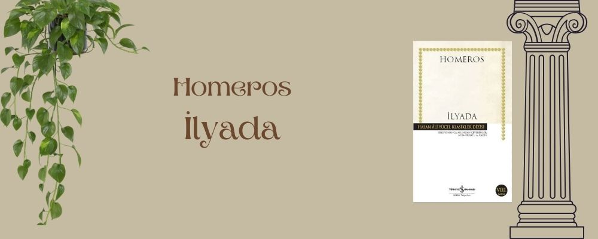
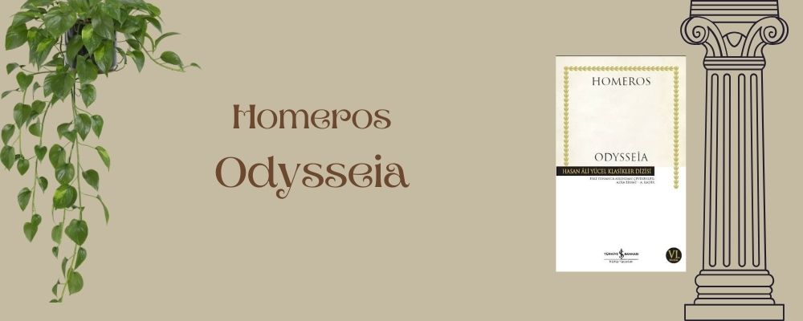
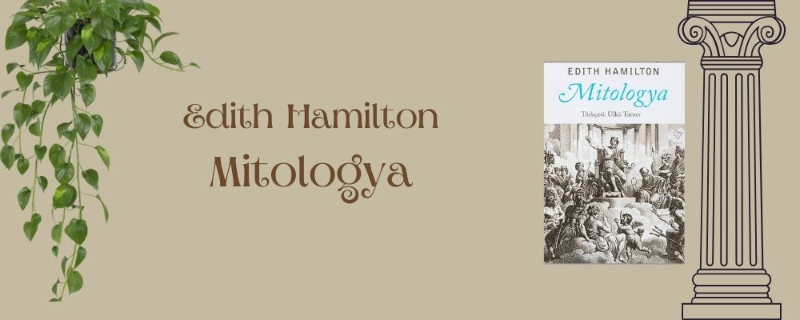
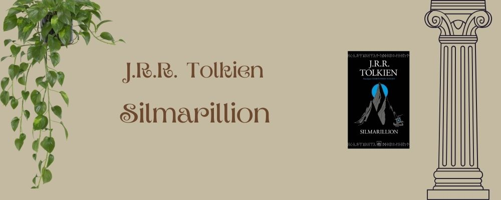
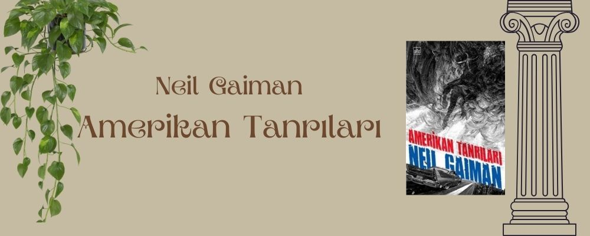
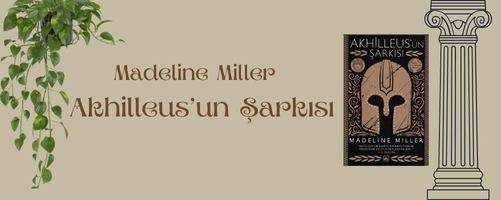
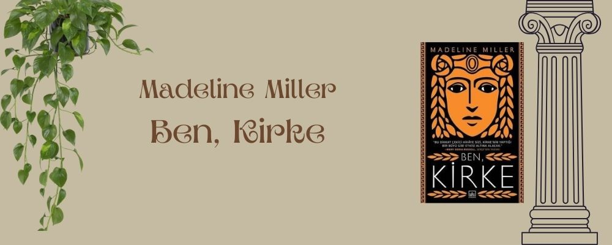
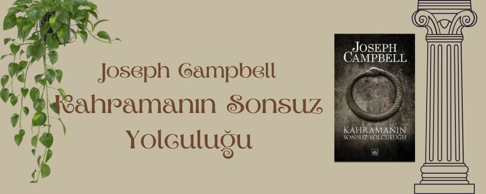
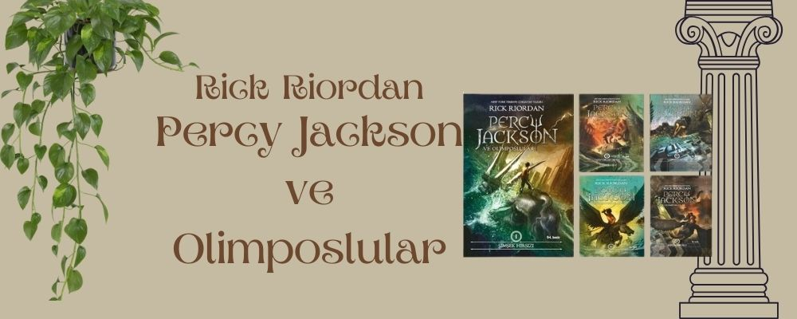

Efsanelerin Peşinde: Mitlerden Doğan Edebiyat
Bir çok millet derin köklere sahip mitlere sahiptir. Bu mitler geçmişten günümüze bazı değişikliklere uğrayarak gelmiştir ve bu süreçte kitaplarda kendilerine yer bulmuşlardır.
Destanlar, romanlar, tiyatrolar ve daha nice edebiyat dalında çok iyi eserler vardır.
Biz de burada bu eserlerden bazılarına yer vererek size, mitolojiyle harmanlanmış kendi hikayelerini anlatan yazarların kitaplarını göstermek istiyoruz.
Homeros - İlyada ve Odysseia
Mitolojiyle ilgili kitap önerileri yaparken Homeros’un İlyada ve Odysseia’sından bahsetmeden geçemeyiz. M.Ö. 7 ya da 8. Yüzyılda yazılmış bu iki destan bizlere Truvalılar ve Yunanların arasındaki Truva(Troya) Savaşı’nı anlatır.

"İlyada," Homeros'un yazdığı destansı bir şiirdir. Truva Savaşı'nın son haftalarını anlatır ve Akhilleus'un öfkesini merkeze alır
Destan, kahramanlık, savaş ve tanrıların müdahaleleri üzerine yoğunlaşır.

"Odysseia," Homeros'un yazdığı destansı bir şiirdir. Odysseus'un Truva Savaşı'ndan sonra evine dönüş yolculuğunda yaşadığı maceraları anlatır.
On yıl süren bu yolculukta, Odysseus çeşitli tehlikeler ve tanrılarla karşı karşıya gelir, zekâsı ve cesaretiyle zorlukları aşar.
Edith Hamilton - Mitologya
Yunan, Roma ve İskandinav mitolojilerini bir araya getirerek, tanrılar, kahramanlar ve
mitolojik yaratıkların hikayelerini anlatır. Bu kitap, mitolojiye giriş yapmak isteyenler için mükemmel bir kaynaktır.

J.R.R. Tolkien - Silmarillion
Orta Dünya'nın yaratılışı ve ilk çağlarını anlatan bu eser, Tolkien'in kurgusal mitolojisidir.
Eser, tanrılar, elfler ve diğer mitolojik varlıkların hikayelerini içerir. Orta Dünya'nın tarihini bizlere anlatırken
Tolkien tarihe mükemmel bir yapıt bırakmıştır.

Neil Gaiman - Amerikan Tarnıları
Neil Gaiman, bu romanda modern Amerika'da yaşayan eski ve yeni tanrıları anlatır.
Eski mitolojik tanrılar, modern dünyanın "yeni tanrıları" ile yüzleşir.

Madeline Miller - Akhilleus'un Şarkısı
Madeline Miller, bu romanda İlyada destanının kahramanı Akhilleus'un yaşamını ve Patroklos ile olan ilişkisini anlatır.
Yunan mitolojisinin bu dramatik yeniden anlatımı, karakterlerin derinlemesine işlendiği bir hikâye sunar.

Madeline Miller - Ben, Kirke
Madeline Miller, bu romanda mitolojik karakter Circe'nin hikayesini yeniden anlatır.
Circe, tanrıların dünyasından dışlanmış ve insanlarla yaşamaya mahkûm edilmiş bir büyücüdür.
Roman, güç, yalnızlık ve özgür irade temalarını işler.

Joseph Campbell - Kahramanın Sonsuz Yolculuğu
Joseph Campbell, bu klasik eserde, mitolojinin evrensel motiflerini ve kahramanın yolculuğu temasını inceler.
Eserde, farklı kültürlerin mitolojik hikayeleri arasındaki ortak yapılar ve temalar keşfedilir.

Rick Riordan - Percy Jackson ve Olimposlular
Rick Riordan'ın bu serisi, Yunan mitolojisini modern dünyaya taşır.
Serinin kahramanı Percy Jackson, tanrıların çocukları olan yarı tanrılardan biridir ve mitolojik yaratıklarla mücadele eder.
